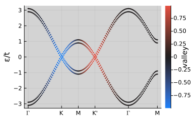
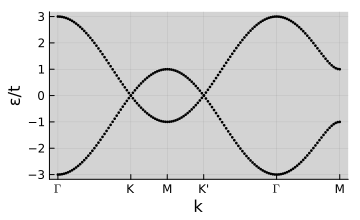
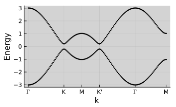
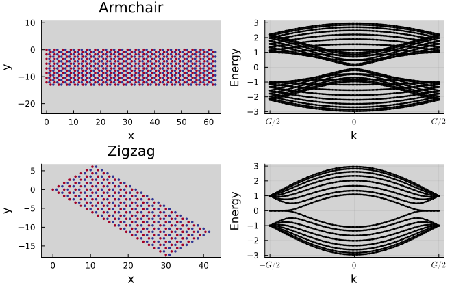
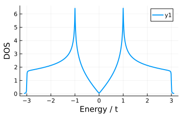
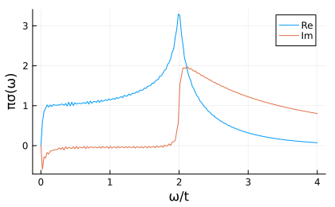
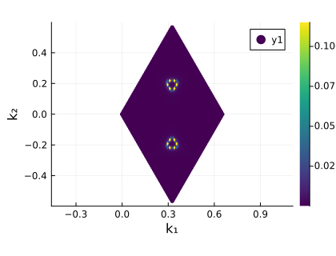

Tutorial 2 — Band Structures
Notebook: extra/tutorial/Tutorial2_Bands.ipynb
This tutorial takes the lattices defined earlier and constructs tight-binding Hamiltonians to compute band structures, colour maps, and expectation values.
Learning goals
- Build graphene Hamiltonians with
Operators.grapheneand optional modifiers (Operators.addzeeman!,Operators.addhaldane!, etc.). - Sample Brillouin-zone paths using
LatticeQM.kpathand customise the resolution. - Compute band energies and operator expectation values with
Spectrum.getbands. - Produce publication-ready plots via
LatticeQM.Plotting.plot.
Prerequisites
- Familiarity with the
Structuremodule (Tutorial 1). PlotsandColorSchemesavailable if you plan to tweak the visuals.
Workflow outline
- Hamiltonian assembly — Start from a lattice and call
hops = Operators.graphene(lat; mode=:spinhalf). - Operator augmentation — Add Zeeman or Haldane terms:
Operators.addzeeman!(hops, lat, Δ)orOperators.addhaldane!(...). - Momentum path — Generate a default high-symmetry path using
ks = kpath(lat; num_points=200). Override the path to explore custom cuts. - Bands & observables — Evaluate
bands = getbands(hops, ks, optional_operator); inspect the attached data. - Plotting — Call
plot(bands; ylabel="ε/t", colorbar=true, ...)to render coloured dispersions, saving figures tooutput/.
Live example — nearest-neighbour model
figdir = joinpath(pwd(), "figures")
mkpath(figdir)
nothingbands = getbands(hops, ks, valley)
first(bands.bands, 3)3-element Vector{Float64}:
-3.1006369141872274
-2.9006369141872277
2.8993630858127593p = plot(
bands;
ylabel="ε/t",
size=(400, 250),
marker=:none,
colorbar=true,
colorbar_title="valley"
)
savefig(p, joinpath(figdir, "graphene_bands_valley.svg"))
nothing
Manual construction of hoppings
lat_simple = Geometries.honeycomb()
function nn_hop(r1, r2=0.0)
δ = r1 .- r2
return 0.9 < norm(δ[1:3]) < 1.1 ? -1.0 : 0.0
end
Hnn = TightBinding.Hops(lat_simple, nn_hop)
ks_dense = kpath(lat_simple; num_points=140)
bands_nn = getbands(Hnn, ks_dense)
p = plot(bands_nn; size=(360, 220), xlabel="k", ylabel="ε/t")
savefig(p, joinpath(figdir, "nearest_neighbor_bands.svg"))
nothing
Pre-defined operators and imbalance
h_pre = Hops()
Operators.nearestneighbor!(h_pre, lat_simple)
Operators.addchemicalpotential!(h_pre, lat_simple, r -> (r[4] == 0) ? 0.2 : -0.2)
bands_pre = getbands(h_pre, ks_dense)
p = plot(bands_pre; size=(360, 220), xlabel="k")
savefig(p, joinpath(figdir, "predefined_imbalance.svg"))
nothing
Expectation values
h_spin = Hops()
Operators.nearestneighbor!(h_spin, lat)
Operators.addsublatticeimbalance!(h_spin, lat, 0.5)
h_spin = TightBinding.addspin(h_spin, :spinhalf)
Operators.addzeeman!(h_spin, lat, 0.15)
sz = Operators.spin(lat, "sz")
valley = Operators.valley(lat; spinhalf=true)
bands_obs = getbands(h_spin, ks, [sz, valley])
plot(bands_obs, 1; size=(360, 220), colorbar_title="spin")plot(bands_obs, 2; size=(360, 220), colorbar_title="valley")Ribbons
N = 8
lat_armchair = Structure.Lattices.reduceto1D(Geometries.honeycomb(), [[1, 1] [N, -N]])
lat_zigzag = Structure.Lattices.reduceto1D(Geometries.honeycomb(), [[1, 0] [0, N]])
h_arm = Operators.graphene(lat_armchair)
h_zig = Operators.graphene(lat_zigzag)
ks_ribbon = kpath(lat_armchair; num_points=120)
bands_arm = getbands(h_arm, ks_ribbon)
bands_zig = getbands(h_zig, ks_ribbon)
p = plot(
plot(lat_armchair, "sublattice"; supercell=[20], markersize=2, title="Armchair", size=(320, 220)),
plot(bands_arm; size=(320, 220), xlabel="k"),
plot(lat_zigzag, "sublattice"; supercell=[20], markersize=2, title="Zigzag", size=(320, 220)),
plot(bands_zig; size=(320, 220), xlabel="k"),
layout=(2, 2), size=(660, 420)
)
savefig(p, joinpath(figdir, "ribbon_comparison.svg"))
nothing
Density of States (DOS)
# Align with the example script: spin-1/2 graphene, dense storage, no Zeeman
lat_dos = Geometries.honeycomb()
hops_dos = DenseHops(Operators.graphene(lat_dos; mode=:spinhalf))
energies, dos = Spectrum.getdos(hops_dos, -3.1, 3.1; klin=800, format=:dense, Γ=0.005)
p = plot(energies, dos; xlabel="Energy / t", ylabel="DOS", size=(380, 240), linewidth=2)
savefig(p, joinpath(figdir, "graphene_dos_full.svg"))
nothing
Computing DOS... 19%|██████▌ | ETA: 0:00:25
Computing DOS... 40%|█████████████▋ | ETA: 0:00:19
Computing DOS... 61%|████████████████████▉ | ETA: 0:00:12
Computing DOS... 82%|███████████████████████████▊ | ETA: 0:00:06
Computing DOS... 100%|██████████████████████████████████| Time: 0:00:30
Optical Conductivity (graphene)
lat2 = Geometries.honeycomb()
hops2 = Operators.graphene(lat2; format=:dense, mode=:nospin)
Operators.addsublatticeimbalance!(hops2, lat2, 0.001)
freqs = LinRange(0.0, 4.0, 180)
Γ = 0.02
σ = LinearResponse.opticalconductivity(freqs, 1, 1, hops2, lat2; klin=220, T=0.001, Γ=Γ)
σ = -(σ .- σ[begin]) ./ (freqs .+ 1im * Γ)
p = plot(freqs, π .* real(σ); label="Re", xlabel="ω/t", ylabel="πσ(ω)", size=(420, 260))
plot!(p, freqs, π .* imag(σ); label="Im")
savefig(p, joinpath(figdir, "graphene_optical_conductivity.svg"))
nothing
Fermi Surface Density (doped graphene)
E_F = 0.30 # shift to reveal circular pockets near K/K′
kgrid, ρ = Spectrum.fermisurfacedensity(hops2, [E_F]; num_points=45)
K = Structure.Lattices.getB(lat2) * kgrid
p = scatter(K[1, :], K[2, :]; marker_z=vec(ρ), ms=3.0, markerstrokewidth=0, colorbar=true,
xlabel="k₁", ylabel="k₂", size=(420, 320), markercolor=:viridis,
aspect_ratio=:equal)
savefig(p, joinpath(figdir, "graphene_fermi_surface_density.svg"))
nothingAutomatic broadening: 0.01603992094637308
Validation checklist
- Ensure symmetry points (Γ, K, M) are labelled as expected.
- Compare band degeneracies against analytical graphene results.
- Check that saved figures mirror those in the tutorial.
Suggested extensions
- Replace
Operators.graphenewith your ownHopsdefinition for custom materials. - Export band data with
save(bands, "bands.h5")and post-process elsewhere. - Combine with
Spectrum.getdos(see Graphene examples) to correlate density of states and dispersion features.